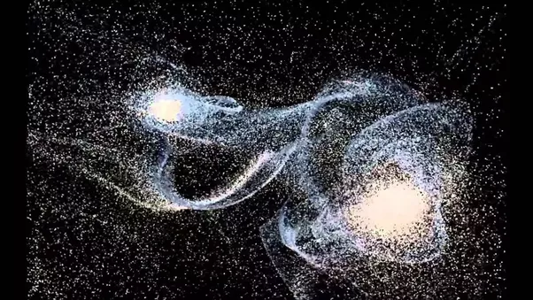
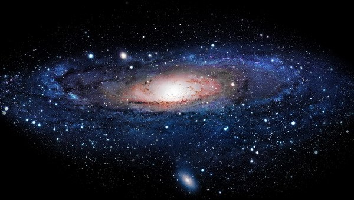

Existence Itself Is Coexistence
Existence is all that is.
All that is co-existing together is Existence.

All is but one and only.
Existence is inseparable, indivisible, absolute. Truth, knowledge, reality, actuality are different words meaning the same as Existence - all that is.
There is no ‘peer’ or other outside all that is (Existence). Can there be something left outside all that is?. There is no ‘creator’ outside of Existence for where would the creator exist if not inside Existence? If there would be more Existences, in which existence or space would they exist together? Hence Existence must be one and only.
There is no part of Existence which exists separately from the rest because if it would it would be part of another Existence and not this one. And as already said, there is no peer to Existence. Existence is absolute. Hence everything that exists is inseparable from Existence. This would mean that Existence is but one fabric and the infinite creation is weaving of that fabric in infinite and ever changing permutations and combinations. Existence is but one fabric only. All is that fabric only. All is one and only.
Existence is infinite.
Existence is all there is to know. Existence is the total object of knowing. Existence is the maximum possible knowing that one can have.
Why does Existence exist? What is the point in thinking about this question for if Existence were not there where would the asker exist? Also, how is this question necessary for our happiness. We just know that Existence is, has been and will be, and we are all inseparable and interconnected part of that one and only.
Does Existence have a start or end? Existence is infinite and eternal. Only parts within Existence have a start or an end for the fabric of Existence is ever evolving.
Energy is the fabric of Existence.
All of Existence is energy only. Energy is of two kinds - in equilibrium and seeking equilibrium.
When the constitution of Existence is looked upon, all its parts are seen to co-exist in an inseparable way because Existence can’t be divided. The main two components of Existence as co-existence are Space and manifest energy.

Space: The infinite energy in equilibrium
A.k.a Void, space, universal consciousness or omnipotence.
There is an infinite and all-pervasive field of unmanifest energy in all round equilibrium and equal density everywhere. Not a “seer”, not a “doer”, not an “experiencer”, not a “creator”, not a “director”, this infinite energy in equilibrium does not, can not “do” anything. Yet as the fundamental basis of Existence, it is the ‘field’ in which rest of co-existence exists. It allows, empowers, connects and mediates between all free energy and matter in co-existence. This field is the fundamental basis of all Existence as co-existence.
Nature: The manifest energy seeking equilibrium
Now, within the infinite energy at equilibrium (Void) there exists manifested energy “not in equilibrium” which is constantly flowing across difference in potential. Manifest energy is eternally seeking equilibrium (also stated as second law of thermodynamics in science). Hence material world or “Nature” is always changing.
There are three kinds of activities in manifest energy
- Breaking down
- Formation
- Equilibrium (or seeking permanence)
All nature (manifest energy including you and me) is but vibrations, disturbances or variations in the field of Void. If someone contemplates on it for sometime, meditation and knowledge will dawn upon them spontaneously. Sometimes these disturbances are flowing and sometimes these are tied together in condensed form. When they are tied together in condensed form - that is matter. Matter is manifested energy condensed together. All matter in nature exists in three different forms
- inert matter like atoms, elements & molecules
- living matter composed of inert matter, like plants, bacteria, animal body, human body or another kind of body. All living bodies ingest, transform, use and expel energy (metabolism). Living matter grows.
- Conscious matter (Life) like you, me all humans and animals which inhabit some body with a brain, senses and nervous system. Life co-exists with a body. It desires, thinks, learns in one lifetime, does things consciously.
Co-existence
Existence itself is co-existence. When seen and analysed as constituent parts Existence appears as co-existence. In reality, all is one and only. That one and only is existence itself.
The infinite field of Void or Space is an inseparable amalgamation of many kinds of fields. Some fields are purely physical. Some allow active consciousness. Nature is disturbance in these fields. The disturbance can shift from one field to another thus taking another manifestation. For example, light energy can convert to electrochemical energy or heat. Manifest energy has infinite manifestations starting from atoms and subatomic particles of different kinds. All of these manifestations are co-dependent on each other. Every atom has an effect howsoever small, on every other atom in Existence and is affected by all of the rest of co-existence in turn. Same for every human. Every thing depends on everything else in co-existence.
The moment there is an atom in Void, there is co-existence. The moment Existence is seen as its parts the parts are seen to be co-dependent, complimentary and co-existing. All the fields co-exist, atoms co-exist, you co-exist, I co-exist. Speaking of Life, every Life co-exists with body. Body is co-existence of multiple layers ranging from gross physical to subtle energetic, lower mental, upper mental and causal bodies. Every two humans are co-existing together. There is co-existence between the seer and the seen too. Existence is energy is all-that-is. But when seen as constituent parts all of Existence is co-existence. Nature in Void is co-existence. Nature within itself is co-existence. Co-existence is the infinite and eternal play between fields of various kinds.
Everythig is connected, co-dependant and complimentary
There is nothing in the entire Existence, which exists alone. Not even the Void. Every particle has an effect on every corner of the infinite existence and is affected by every other particle. This is derivable through science as well.
So then why does Life feel or act separate from the rest when in reality Life IS NOT SEPARATE from the rest. When you will live with awareness of the Void you will feel the oneness of all-that-is. Tthe Void being the all encompassing field in which every thing is soaked, dipped and surrounded, allows everything to exist as unified, “One and Only” Existence. This oneness is Love. Void itself is love. All energy is love. Existence is knowledge is truth is energy is love.
Contemplative meditation on co-existence
Meditation is the world of pure Existence. Contemplation is the doorway to meditation. Attention is the key.
In the Universal Consciousness, with rest of the co-existence, I am.
With your attention on each word of this statement for long enough see whether or not it makes you feel true connectedness with everything else. See if it makes you feel infinite just like the Void. See how it takes you to transcendence. See how it brings pure joy inside of you! :)